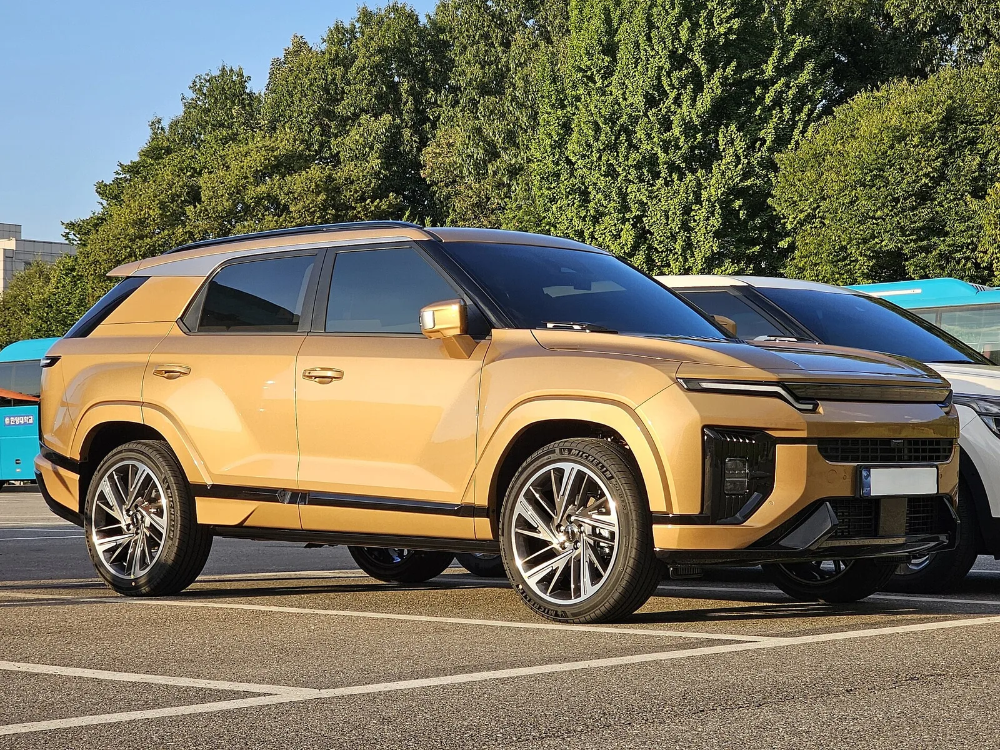
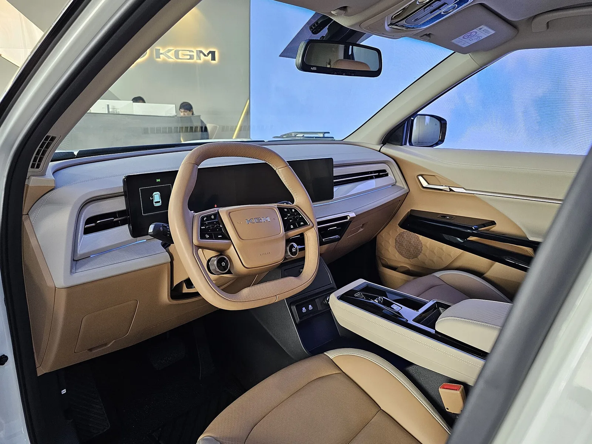
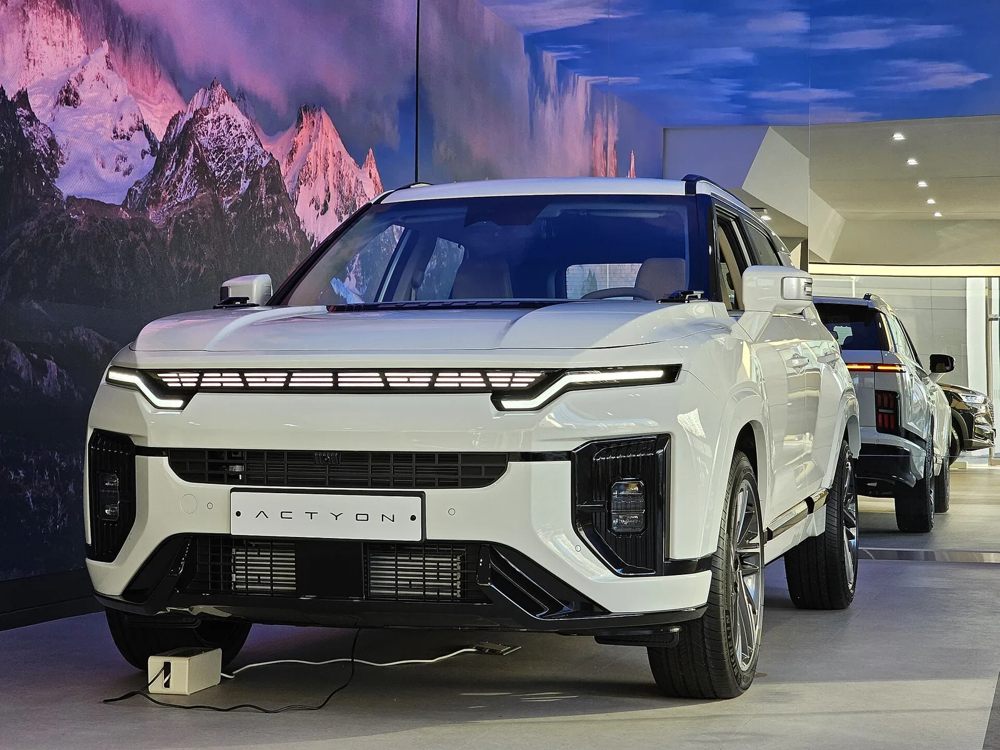

▲ KGM 액티언. 가솔린과 하이브리드 모두 단일 트림으로 정리됐다 ⓒ Wikimedia Commons
액티언에는 트림이 하나뿐입니다.
가솔린 S8이 3,417만 원, 하이브리드 S8이 3,695만 원. 그 사이에 다른 선택지가 없습니다.
국산 SUV에서 흔치 않은 구성입니다. 대개는 최하위부터 최상위까지 네다섯 단계를 둡니다.
1. 단일 트림이라는 선택
| 구분 | 트림 | 가격 |
|---|---|---|
| 가솔린 | S8 단일 | 3,417만 원 |
| 하이브리드 | S8 단일 | 3,695만 원 |
| 2027년형 가솔린 | S8 단일 | 3,517만 원 |
단일 트림 전략에는 명확한 득실이 있습니다.
| 구분 | 내용 |
|---|---|
| 득 | 생산 라인이 단순해져 원가가 내려간다 |
| 득 | 재고 관리가 쉽고 출고가 빠르다 |
| 득 | 구매자가 고민할 것이 없다 |
| 실 | 필요 없는 사양도 같이 사야 한다 |
| 실 | 더 싼 진입 가격을 만들 수 없다 |
| 실 | 상위 사양으로 마진을 올릴 여지가 없다 |
KGM처럼 규모가 크지 않은 제조사에게는 첫 번째와 두 번째가 큽니다. 트림이 다섯 개면 조합에 따라 재고 종류가 수십 가지가 됩니다.
다만 마지막 항목이 수익성 측면의 대가입니다. 완성차 업체는 상위 트림에서 마진을 냅니다. 그 구조를 포기한 셈입니다.
2. 278만 원의 가치
| 구분 | 가솔린 | 하이브리드 |
|---|---|---|
| 엔진 | 1.5L 가솔린 터보 | 1.5L 가솔린 터보 |
| 변속기·구동 | 아이신 8단 자동 | 직병렬 2모터 |
| 배터리 | — | 1.837kWh NCM |
| 시스템 출력 | — | 204마력 |
| 복합연비 | — | 15.0km/L |
| 가격 | 3,417만 원 | 3,695만 원 (+278만 원) |
278만 원을 연료비로 회수하려면 얼마나 타야 할까요.
가솔린 1.5 터보 SUV의 복합연비를 11km/L 안팎으로 가정하면, 하이브리드 15.0km/L와의 차이는 약 4km/L입니다. 다만 연비 차이를 그대로 연료비 차이로 옮기면 계산이 틀어집니다. 중요한 건 km/L가 아니라 같은 거리를 갈 때 쓰는 L입니다.
| 구분 | 가솔린 (11km/L) | 하이브리드 (15km/L) |
|---|---|---|
| 연간 연료 소모 | 약 1,364L | 약 1,000L |
| 연간 연료비 | 약 232만 원 | 약 170만 원 |
| 연간 차이 | 약 62만 원 절감 | |
| 278만 원 회수 | 약 4.5년 | |
연 1만5,000km를 탄다면 4년 반 정도면 차액이 넘어옵니다. 국내 승용차 평균 주행거리가 연 1만3,000km 안팎인 점을 감안하면, 평균적인 운전자에게는 5년 남짓이 분기점입니다.
| 연 주행거리 | 연간 절감액 | 회수 기간 |
|---|---|---|
| 1만 km | 약 41만 원 | 약 6.7년 |
| 1만5,000km | 약 62만 원 | 약 4.5년 |
| 2만 km | 약 82만 원 | 약 3.4년 |
| 3만 km | 약 124만 원 | 약 2.2년 |
주행거리가 길수록 유리해지는 구조입니다. 출퇴근 거리가 짧아 연 1만 km를 밑돈다면 회수에 7년 이상 걸리니 가솔린이 합리적이고, 연 2만 km를 넘긴다면 3년 안에 넘어옵니다. 여기에 연료비 외의 가치가 더해집니다.
| 항목 | 내용 |
|---|---|
| 세제 혜택 | 친환경차 취득세 감면 등 — 조건 확인 필요 |
| 정숙성 | 저속에서 모터 주행 |
| 출력 | 204마력 — 가솔린 단독보다 여유가 있다 |
| 잔가 | 중고 시장에서 하이브리드 수요가 강하다 |

▲ 하이브리드는 1.837kWh 배터리와 직병렬 2모터로 시스템 204마력을 낸다
3. 듀얼 테크 하이브리드란
KGM이 쓰는 이름은 '듀얼 테크 하이브리드'입니다. 구조는 직병렬 2모터 방식입니다.
| 방식 | 구조 | 특징 |
|---|---|---|
| 병렬형 | 엔진과 모터가 함께 바퀴를 굴린다 | 고속에서 유리 |
| 직렬형 | 엔진은 발전만, 모터가 굴린다 | 저속에서 유리 |
| 직병렬(2모터) | 상황에 따라 전환 | 토요타·혼다가 쓰는 방식 |
직병렬은 저속에서 직렬로, 고속에서 병렬로 작동합니다. 두 방식의 장점을 상황별로 쓰는 구성입니다.
1.837kWh라는 배터리 용량은 하이브리드 기준으로 작지 않습니다. 일반적인 마일드 하이브리드가 0.5kWh 미만인 것과 비교하면 본격 하이브리드 영역입니다.
4. 판매량이 말하는 것
| 월 | 판매 |
|---|---|
| 2월 | 355대 |
| 3월 | 310대 |
| 4월 | 258대 |
| 5월 | 198대 |
| 6월 | 265대 |
출시 초반 355대에서 5월 198대까지 내려갔다가 6월에 265대로 반등했습니다.
이 수준은 국내 준중형 SUV 시장에서 크지 않습니다. 같은 체급의 스포티지와 투싼은 월 수천 대를 팝니다.
하이브리드 투입이 이 흐름을 바꿀 수 있는지가 관건입니다. 국내 SUV 구매층의 하이브리드 선호가 뚜렷해진 상황에서, 선택지가 없던 것이 판매 부진의 한 요인이었습니다.

▲ 액티언 실내. 계기판과 인포테인먼트를 잇는 와이드 디스플레이는 단일 트림에도 기본이다 ⓒ Wikimedia Commons
5. 액티언이 놓인 자리
| 구분 | 대략적 위치 |
|---|---|
| 액티언 가솔린 | 3,417만 원 |
| 액티언 HEV | 3,695만 원 |
| 스포티지·투싼 중상위 트림 | 3,000만 원대 중후반 |
| 셀토스·코나 상위 트림 | 3,000만 원대 초반 |
액티언은 스포티지·투싼과 정면으로 겹칩니다. 이 시장에서 이기려면 가격이나 사양 중 하나에서 뚜렷한 우위가 필요합니다.
단일 트림 전략은 그 답으로 볼 수 있습니다. 같은 값에 상위 트림 사양을 기본으로 주는 방식입니다. 다만 구매자가 그 사실을 인지해야 작동합니다.

▲ 액티언은 스포티지·투싼과 정면으로 겹치는 체급이다

▲ KGM은 트림을 하나로 줄여 원가와 재고 관리에서 이점을 노렸다
6. 정리
KGM 액티언이 가솔린·하이브리드 모두 S8 단일 트림으로 운영됩니다. 가솔린 3,417만 원, 하이브리드 3,695만 원으로 차이는 278만 원입니다. 2027년형 가솔린은 3,517만 원입니다.
하이브리드는 1.5L 가솔린 터보에 1.837kWh NCM 배터리와 직병렬 2모터를 조합해 시스템 204마력, 복합연비 15.0km/L를 냅니다.
단일 트림은 원가와 재고 관리에서 유리하지만 상위 사양으로 마진을 올릴 여지를 포기하는 구성입니다. 2025년 월 판매는 198~355대 수준이었습니다.